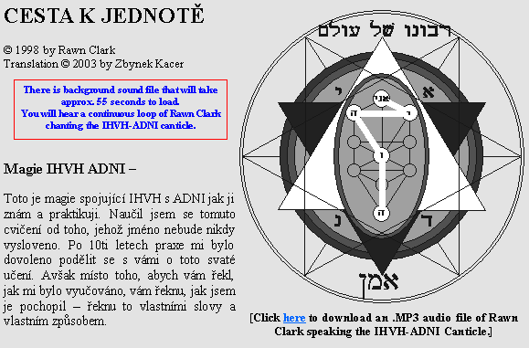
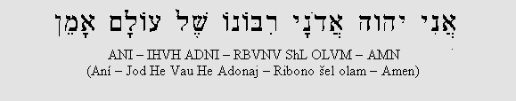
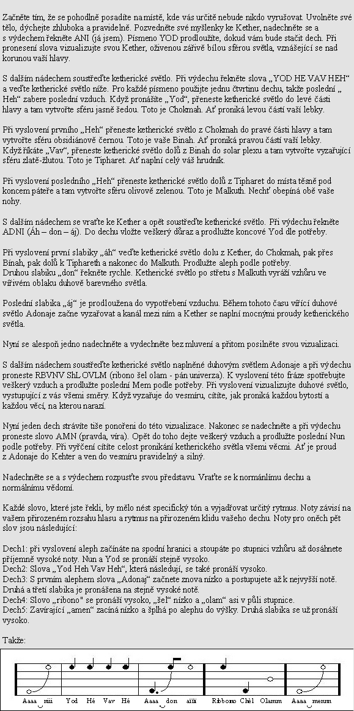

<!doctype html public "-//IETF//DTD HTML//EN//2.0">
<html>
<head>
<meta http-equiv="Content-Type" content="text/html; charset=windows-1252">
<meta name="Generator" content="Microsoft Publisher 98">
<meta name="description" content="Rawn Clark&#39;s practical commentaries on the three books by Franz Bardon.  Plus several other works by Rawn Clark.">
<meta name="keywords" content="Bardon, Franz Bardon, Hermetics, Magic, Kabbalah, Qabbala, 231 Gates, Sefer Yetzirah, Rawn Clark">
<title>A Bardon Companion: CESTA K JEDNOT</title>
<link href="css/layout.css" rel="stylesheet" type="text/css" />
<bgsound src="http://www.abardoncompanion.com/IHVH-ADNI.wav" loop=infinite>
</head>
<body>
<div id="wrapper">
  <div id="header">
    <style type="text/css">
<!--
.style1 {color: #FFFFFF}
-->
</style>
<table width="100%" border="0" bgcolor="#391C5A">
  <tr valign="bottom">
    <td><a href="index.html"></a></td>
    <td align="right"><p>
	<a class="style1" href="http://www.abardoncompanion.de">eurasian site</a></p>
      <p><a href="Search.html" class="style1">search this site</a></p>
      <!--
<form action="http://www.google.com/cse" id="cse-search-box">
  <div>
    <input type="hidden" name="cx" value="009078979323744063894:zbfemps5nsc" />
    <input type="hidden" name="ie" value="UTF-8" />
    <input type="text" name="q" size="31" />
    <input type="submit" name="sa" value="Search" />
  </div>
</form>
<script type="text/javascript" src="http://www.google.com/cse/brand?form=cse-search-box&lang=en"></script> 
-->

   </td>
  </tr>
</table>

  </div>
  <div id="container">
    <div id="side-a">
      
<head>
<style type="text/css">
.auto-style2 {
	text-align: center;
}
.auto-style3 {
	font-size: medium;
}
.auto-style7 {
	font-size: small;
}
</style>
</head>

<div class="auto-style2">
	<span class="auto-style3"><strong>&diams;</strong> </span> <a href="index.html"><strong>
	<span class="auto-style3">Home Page</span></strong></a><span class="auto-style3"> 
	<strong>&diams;</strong></span></div>
<hr />
<h2 class="auto-style2">Shop ABC.com!</h2>
<div class="auto-style2">
<span class="auto-style3"><strong>&diams;</strong> </span> 
<a href="CDs.html">
<span class="auto-style3"><strong>Audio CDs</strong></span></a><br>
Rawn&#39;s audio-CDs.<br>
<span class="auto-style3"><strong>&diams;</strong> </span> <a href="shop.html"><strong>
<span class="auto-style3">Books and eBooks</span></strong></a><br class="auto-style3" />
  Rawn&#39;s books and eBooks.</div>
<hr>
<strong><span class="auto-style3">&diams; A Bardon Companion</span></strong><br class="auto-style3" />
  Rawn's Commentaries on Bardon's three books:<table width="90%" border="0" cellpadding="3" cellspacing="0">
  <tr valign="bottom">
    <td><a href="CommentariesLinks.html"></a><br />
      <a href="CommentariesLinks.html">english</a></td>
    <td><a href="CommentariesLinks-fr.html"></a><br />
      <a href="CommentariesLinks-fr.html">french</a></td>
    <td><a href="CommentariesLinks-de.html"></a><br />
      <a href="CommentariesLinks-de.html">german</a></td>
    <td><a href="CommentariesLinks-it.html"></a><br />
      <a href="CommentariesLinks-it.html">italian</a></td>
  </tr>
  <tr valign="bottom">
    <td><a href="PDF-Links.html"></a><br />
      <a href="PDF-Links.html">polish</a></td>
    <td><a href="CommentariesLinks-ro.html"></a><br />
      <a href="CommentariesLinks-ro.html">roma</a></td>
    <td><a href="CommentariesLinks-es.html"></a><br />
      <a href="CommentariesLinks-es.html">spanish</a></td>
    <td>&nbsp;</td>
  </tr>
  <tr valign="bottom">
    <td valign="bottom">partial<br />
    translation    </td>
    <td><a href="CommentariesLinks-ru.html"></a><br />
      <a href="CommentariesLinks-ru.html">russian</a></td>
    <td><a href="CommentariesLinks-sl.html"></a><br />
      <a href="CommentariesLinks-sl.html">slovakian</a></td>
    <td>&nbsp;</td>
  </tr>
</table>
<hr />
<strong><span class="auto-style3">&diams; </span> </strong>
<a href="Lecture/index.html"><strong>
<span class="auto-style3">2009 
Lecture Series</span></strong></a><br class="auto-style3" />
<span class="auto-style7">Audio recordings of the series.</span><hr />
<span class="auto-style3"><strong>&diams;
</strong>
</span>
<strong><a href="Articles-Links.html"><span class="auto-style3">Other Articles and 
Essays</span></a></strong>
<hr />
<strong><span class="auto-style3">&diams; </span> </strong>
<a href="Gra/index.html"><strong>
<span class="auto-style3">An Examination 
of</span></strong></a><strong><br class="auto-style3"><span class="auto-style3">&nbsp;&nbsp; 
</span> </strong>
<a href="Gra/index.html"><strong>
<span class="auto-style3">the Gra Tree of 
Life</span></strong></a><br><span class="auto-style7">Audio-visual presentations.</span><hr />
<span class="auto-style3"><strong>&diams;</strong> </span> <strong><a href="KTS-Links.html">
<span class="auto-style3">Know Thy Self</span></a></strong><br class="auto-style3" />
A guide to recognizing the essential Self.<hr />
<strong><span class="auto-style3">&diams; Self-Healing Archaeous</span></strong><br class="auto-style3" />
Audio Lessons<table width="90%" border="0" cellpadding="3" cellspacing="0">
  <tr valign="bottom">
    <td><a href="Archaeous-Links.html"></a><br />
      <a href="Archaeous-Links.html">english</a></td>
    <td><a href="http://franzbardon.pl/lekcje/arch"></a><br />
      <a href="http://franzbardon.pl/lekcje/arch" target="_blank">polish</a></td>
  </tr>
</table>
<hr />
<span class="auto-style3">
<strong>&diams; The Magic of IHVH-ADNI (TMO)</strong> </span>Audio Lessons<table width="90%" border="0" cellpadding="3" cellspacing="0">
  <tr valign="bottom">
    <td><a href="TMO-Links.html"><br />
      english</a></td>
    <td><a href="http://franzbardon.pl/lekcje/tmo/"><br />
      polish</a></td>
  </tr>
</table>
<hr />
<strong><span class="auto-style3">&diams; The Eight Temples Meditation Project</span></strong><br class="auto-style3" />
Exploring the planetary spheres of the Tree of Life.<table width="90%" border="0" cellpadding="3" cellspacing="0">
  <tr valign="bottom">
    <td><a href="8T-Links.html"></a><br />
      <a href="8T-Links.html">english</a></td>
    <td><a href="8T-Links-it.html"></a><br />
      <a href="8T-Links-it.html">italian</a></td>
    <td><a href="8T-Links-es.html"></a><br />
      <a href="8T-Links-es.html">spanish</a></td>
    <td><a href="http://franzbardon.pl/ksiazki/8t"></a><br />
      <a href="http://franzbardon.pl/ksiazki/8t" target="_blank">polish</a></td>
  </tr>
</table>
<hr />
<strong><span class="auto-style3">&diams; Permutations of the Tree: BOOK 231</span></strong><br class="auto-style3" />
A radical restatement of the 231 Gates.<table width="90%" border="0" cellpadding="3" cellspacing="0">
  <tr valign="bottom">
    <td><a href="Book231/index.htm"></a><br />
      <a href="Book231/index.htm">english</a></td>
    <td><a href="Book231/index-ES.htm"></a><br />
      <a href="Book231/index-ES.htm">spanish</a></td>
    <td><a href="Book231/index-FR.htm"></a><br />
      <a href="Book231/index-FR.htm">french</a></td>
  </tr>
</table>
<hr />
<span class="auto-style3">&diams; </span> <strong><a href="MP3-Links.html">
<span class="auto-style3">Downloadable .MP3 audio files - Free</span></a></strong><hr />
<span class="auto-style3">&diams; </span> <strong><a href="PDF-Links.html">
<span class="auto-style3">Downloadable .PDF and eBook files - Free</span></a></strong><hr />
<span class="auto-style3">&diams; </span> <strong><a href="Corresp-Links.html">
<span class="auto-style3">Excerpts from Rawn's public and private correspondence</span></a></strong><hr />
<span class="auto-style3">&diams; </span> <strong><a href="http://www.abardoncompanion.com/BardonPraxis/">
<span class="auto-style3">BardonPraxis Message Archive</span></a></strong><br class="auto-style3" />
Archive of the old discussion group.<hr />
<span class="auto-style3">&diams; </span> <strong><a href="Question/Links.html">
<span class="auto-style3">Bardon Questionnaire</span></a></strong><br class="auto-style3" />
Results of the 2003 survey.<hr />
<span class="auto-style3">&diams; </span> <strong><a href="WWW-Links.html">
<span class="auto-style3">Links</span></a></strong><hr />
<form action="https://www.paypal.com/cgi-bin/webscr" method="post">
<input type="hidden" name="cmd" value="_s-xclick">
<input type="hidden" name="hosted_button_id" value="4FJ5SCYP7JNYQ">
<input type="image" src="https://www.paypal.com/en_US/i/btn/btn_donate_SM.gif" border="0" name="submit" alt="PayPal - The safer, easier way to pay online!">

</form>


    </div>
    <div id="content"> <a name=top></a>
      <table border=0 cellpadding=0 cellspacing=0>

        <tr>
          <td></td>
          <td width=579 colspan=1 rowspan=2 valign=top align=left><map name="map359">
              <area shape="rect" coords="15,88,249,154">
              <area shape="rect" coords="261,10,576,334">
              <area shape="rect" coords="0,0,261,87">
              <area shape="rect" coords="0,153,261,381">
              <area shape="rect" coords="0,87,273,153">
              <area shape="rect" coords="313,341,335,357" href="http://www.abardoncompanion.com/IHVH-ADNI.mp3">
              <area shape="rect" coords="261,0,579,381">
            </map>
            </td>
          <td></td>
        </tr>
        <tr>
          <td></td>
          <td></td>
        </tr>
        <tr>
          <td></td>
          <td width=579 colspan=1 rowspan=1 valign=top align=left></td>
          <td></td>
        </tr>
        <tr>
          <td></td>
          <td width=579 colspan=1 rowspan=1 valign=top align=left><table border=0 cellpadding=0 cellspacing=0>
              <tr>
                <td width=578 colspan=3 bgcolor=#ff0000></td>
              </tr>
              <tr>
                <td width=2 bgcolor=#ff0000></td>
                <td width=573 valign=top align=left bgcolor=#e3e3e3><table border=0 cellpadding=0 cellspacing=0>
                    <tr>
                      <td width=3></td>
                      <td width=565></td>
                      <td width=3></td>
                    </tr>
                    <tr>
                      <td></td>
                      <td width=565 valign=top align=left><p align=center>
                          <center>
                          <B>The Magic of IHVH-ADNI</B><br>
                          <center>
                          Recorded Audio Lessons (in English only)&nbsp; for Downloading<br>
                          <center>
                          ---------------------------------------------------------------------------------------------------<br>
                          <center>
                          <B>Lesson One: <a href="http://www.abardoncompanion.com/IHVH-ADNI-Lesson1.mp3">Pronunciation, Tonality and Rhythm</a></B><br>
                          <center>
                          Run Time:&nbsp; 08:34&nbsp; &nbsp; &nbsp; &nbsp; &nbsp; File Size:&nbsp; 5 mb<br>
                          <center>
                          <br>
                          <center>
                          <B>Lesson Two: <a href="http://www.abardoncompanion.com/IHVH-ADNI-Lesson2.mp3">Three-Part Magical Speech</a></B><br>
                          <center>
                          Run Time:&nbsp; 09:33&nbsp; &nbsp; &nbsp; &nbsp; &nbsp; File Size:&nbsp; 5.5 mb<br>
                          <center>
                          <br>
                          <center>
                          <B>Lesson Three: <a href="http://www.abardoncompanion.com/IHVH-ADNI-Lesson3.mp3">Energetics</a></B><br>
                          <center>
                          Run Time:&nbsp; 17:01&nbsp; &nbsp; &nbsp; &nbsp; &nbsp; File Size:&nbsp; 9.8 mb<br>
                          <center>
                          <br>
                          <center>
                          <B>Lesson Four: <a href="http://www.abardoncompanion.com/IHVH-ADNI-Lesson4.mp3">Applications</a></B><br>
                          <center>
                          Run Time:&nbsp; 18:39&nbsp; &nbsp; &nbsp; &nbsp; &nbsp; File Size:&nbsp; 10.6 mb<br>
                          <center>
                          <br>
                          <center>
                          <B>Lesson Five: <a href="http://www.abardoncompanion.com/IHVH-ADNI-Lesson5.mp3">Creating a Triple Shield</a></B><br>
                          <center>
                          Run Time:&nbsp; 15:14&nbsp; &nbsp; &nbsp; &nbsp; &nbsp; File Size:&nbsp; 8.7 mb<br>
                          <center>
                          <br>
                          <center>
                          <B>Lesson Six: <a href="http://www.abardoncompanion.com/IHVH-ADNI-Lesson6.mp3">Consciousness Raising</a></B><br>
                          <center>
                          Run Time:&nbsp; 21:14&nbsp; &nbsp; &nbsp; &nbsp; &nbsp; File Size:&nbsp; 12.1 mb<br>
                          <center>
                          <br>
                          <center>
                          <B>Lesson Seven: Setting the Tone of the Temporal Moment&nbsp; </B><B>&gt;&gt; New! &lt;&lt;</B><br>
                          <center>
                          <B><a href="http://www.abardoncompanion.com/IHVH-ADNI-Lesson7a.mp3">Introduction</a></B> -- Run Time:&nbsp; 19:21&nbsp; File Size:&nbsp; 11 mb<br>
                          <center>
                          <B><a href="http://www.abardoncompanion.com/IHVH-ADNI-Lesson7b.mp3">Practice</a> </B>-- Run Time:&nbsp; 23:17&nbsp; File Size:&nbsp; 13.3 mb<br>
                          <center>
                          <br>
                          <center>
                          <B>Lesson Eight: Healing From Afar&nbsp; </B><B>&gt;&gt; New! &lt;&lt;</B><br>
                          <center>
                          <B><a href="http://www.abardoncompanion.com/IHVH-ADNI-Lesson8a.mp3">Introduction</a> </B>-- Run Time:&nbsp; 01:50&nbsp; File Size:&nbsp; 1.05 mb<br>
                          <center>
                          <B><a href="http://www.abardoncompanion.com/IHVH-ADNI-Lesson8b.mp3">Practice</a> </B>-- Run Time:&nbsp; 12:25&nbsp; File Size:&nbsp; 7.1 mb<br>
                          <center>
                          <br>
                          <center>
                          <B>Lesson Nine: The Blessing of IHVH-ADNI&nbsp; </B><B>&gt;&gt; New! &lt;&lt;</B><br>
                          <center>
                          <B><a href="http://www.abardoncompanion.com/IHVH-ADNI-Lesson9a.mp3">Introduction</a> </B>-- Run Time:&nbsp; 04:45&nbsp; File Size:&nbsp; 2.71 mb<br>
                          <center>
                          <B><a href="http://www.abardoncompanion.com/IHVH-ADNI-Lesson9b.mp3">Practice</a> </B>-- Run Time:&nbsp; 17:55&nbsp; File Size:&nbsp; 10.2 mb<br>
                      </td>
                      <td></td>
                    </tr>
                    <tr>
                      <td></td>
                      <td colspan=2></td>
                    </tr>
                  </table></td>
                <td width=2 bgcolor=#ff0000></td>
              </tr>
              <tr>
                <td width=578 colspan=3 bgcolor=#ff0000></td>
              </tr>
            </table></td>
          <td></td>
        </tr>
        <tr>
          <td></td>
          <td width=579 colspan=1 rowspan=1 valign=top align=left></td>
          <td></td>
        </tr>
        <tr>
          <td></td>
          <td width=579 colspan=1 rowspan=1 valign=top align=left><table border=0 cellpadding=0 cellspacing=0>
              <tr>
                <td width=578 valign=top align=left bgcolor=#e3e3e3><table border=0 cellpadding=0 cellspacing=0>
                    <tr>
                      <td width=3></td>
                      <td width=570></td>
                      <td width=3></td>
                    </tr>
                    <tr>
                      <td></td>
                      <td width=570 valign=top align=left><p align=left><br>
                          Doporucuji, abyste do pronáaení zapojili tak 5 a~ 8 nemluvených dechu, tak~e celkove se zpev prodlou~í na 10 a~ 13 dechu.<br>
                          <br>
                          Provádejte toto cvicení denne, dokud se s&nbsp;ním úplne nes~ijete a nebudete ho provádet bez obtí~í. Toto cvicení uvede eventuálne vaae mentální a astrální telo do shody pri vizualizaci IHVH-ADNI struktury. Ka~dá sféra a úroven ketherického svetla mezi nimi se stane aktuálním aspektem vaaich jemnejaích tel. <br>
                          <br>
                          <B>Cesta IHVH ADNI</B> -<br>
                          Toto je prirozená cesta pro vaechno dení: Ayin Soph Aur se stáhne do sebe a vytvorí ANI: ANI vytvárí Yod, Yod vytvárí první Heh. IH vytvorí Vav, IHV vytvorí koncové Heh. IHVN vytvorí ADNI. IHVH-ADNI (IAHDVNHI) vytvárí, proniká, vy~ivuje, je vaemi vecmi v&nbsp;prícinném vesmíru. <br>
                          <br>
                          Tato cesta veakerého dení je konstantní, bezchybná, vecná. Není mo~né, aby tomu nekdy bylo jinak. Koreny prícin této cesty le~í v&nbsp;ríai, která presahuje cas a zpusobuje jeho plynutí. Tento archetyp existuje mimo vliv casu a presto proniká nekonecným rozpetím casu.<br>
                          Tato prirozená cesta dení je natolik samozrejmá soucást naaich zá~itku, je natolik soucástí naaich mechanizmu vnímání a objektu vnímání, ~e jsme se vuci ní stali slepými a prestali jsme ji vnímat. Jsme tak okouzleni nekonecnou ruzností stromu, ~e si nevaímáme vy~ivujícího ekosystému lesa v&nbsp;pozadí. Nicméne, my a stromy a celá ruznorodost vecí existuje jen díky této  základní" ceste vaech vecí - jsme, ka~dý jednotlivec, manifestací této cesty. Nejen, ~e jí jsme vytvoreni, ale sami ji vytváríme. My a cesta jsme neodlucitelní. <br>
                          <br>
                          Naae manifestace prirozené cesty dení se projevuje s&nbsp;nebo bez naaí vedomé ci zámerné úcasti. I kdy~ obrátíme své individuální vedomí k&nbsp;této prirozené ceste a naucíme se vedome úcastnit jejich manifestací, objevuje se silnejaí náprava mezi tímto nerovnová~ným stavem oproti be~nému vedomí a jednoty s&nbsp;veakerým bytím. Tento akt vedomé úcasti ociatuje vecný kanál ketherického svetla pricházejícího do prítomnosti naaeho casove omezeného vesmíru. <br>
                          <br>
                          Kdy~ je pruchod ociaten pomocí vytrvalého opakování soustredeného vedomí a keterické svetlo proudí silne z&nbsp;vecnosti do soucasnosti, lidskému srdci se otevre cesta, která vede vzhuru spolu s&nbsp;proudy svetla.<br>
                          <br>
                          Zanechávaje za sebou fyzické a astrální telo, povede vás cesta k&nbsp;Tiphareth. Zde musíte shlédnout dolu na svá tela a vnímat celý proud své soucasné inkarnace. Toto je Vav, které existuje skrze cas, ale nepresahuje jej. Skrze rozpetí casu se manifestuje stále dokola v&nbsp;materiálním svete. Ka~dá inkarnace je za~ívána jako následek prítomnosti. V&nbsp;Tiphareth musíte usilovat o nahlédnutí do vaech inkarnací, které probehly do dneaka od narození vaaeho individuálního-Vav Já.<br>
                          <br>
                          Pokud jste videli vaechny své ~ivoty a znáte své individuální Já, musíte si  vybrat ~ivot" a aktivne se vrátit do svého astrálního a fyzického tela. Musíte pak vedome manifestovat své vedomosti z&nbsp;individuálního Já v&nbsp;soucasnosti a probíhající inkarnaci. Toto následne ocistí kanál svetla mezi Vav a Heh, pricem~ je efektivne sjednotí. Kdy~ uskutecníte VH, otevre se v&nbsp;srdci individuálního Já brána, po ní~ vede cesta vzhuru s&nbsp;proudem svetla. <br>
                          <br>
                          Po VH se vratte do Tiphareth (nyní konstantního vedomí) a pohledte vzhuru podle proudu svetla k&nbsp;Binah. Mezi vámi a Binah se objeví závoj, který zatemnuje vizi. Podél svetla mu~ete stoupat jen do urcité výae, dokud vás závoj nezastaví v&nbsp;postupu. <br>
                          <br>
                          Existuje jen jedna cesta, jak proniknout oním závojem. Musíte vystoupat podél svetla jak nejvýae to jde a pak se s&nbsp;ním vrátit do své fyzické inkarnace. Musíte veskrze integrovat toto svetlo prostrednictvím individuálního, osobního a fyzického aspektu své bytosti. Pro ka~dé mno~ství svetla, které zhmotníte, vám bude o to více svetla k&nbsp;dispozici pri následujícím postupu vzhuru. Zpocátku je toto pomalý a obtí~ný postup, ale s&nbsp;vytrvalostí onen závoj prekonáte. <br>
                          <br>
                          Postup podél svetla není konstantním pokrokem s&nbsp;jistou malou odmenou. Na této ceste narazíte na nekolik skoku, které vás posunou vstríc porozumení. Ka~dý skok radikálne vyjasní vaae porozumení a vhled.<br>
                          <br>
                          První skok vám uká~e rozdíl mezi Tiphareth a Binah, a odkryje primární vrstvu závoje. Zatímco VH existuje v&nbsp;ríai prícin a následku, a casu, Bínah obepíná a je prícinou celé nekonecnosti následku/casu. Binah je ríae nepodléhající prícinám, která vaak dává zrod vaem prícinám. Dává povstávat prícinám a je ríaí prícin, ale za~ívá tuto prícinnost z&nbsp;hlediska nepodléhajícího prícinám. <br>
                          <br>
                          Pochopení techto základních rozdílu otevírá bránu svetla podél stezky, ozarujíc tak druhý skok. Ten vám ozrejmí podobnosti mezi prvním Heh Bínah a VH. Toto je dovraeno vizí, která nabízí pohled na jednotnost, která spojuje celou nekonecnost individuálních Jáství. (Je to jen vize a jen jako symbolické vyjádrení jednoty stvorení, slou~í vaak také jako ukázka základní propojenosti. Nemelo by to vaak, pres svou intenzitu a sílu, být zamenováno se skutecným zá~itkem jednotného vedomí). <br>
                          <br>
                          Vize jednotnosti odkrývá druhou vrstvu závoje a privádí nás k&nbsp;masivní, zavrené bráne, která brání v&nbsp;dalaím postupu. Klíc, jím~ odemknete tuto pomyslnou bránu, spocívá v&nbsp;pochopení základních rozdílností.<br>
                          <br>
                          Cesta za touto bráno vede ke tretímu a poslednímu skoku. Krácet po této ceste vy~aduje oproatení se jak od podobností, tak od rozdílností. Musíte se dokonce pozvednou nad vlastní sebe-vedomí coby individualitu a rozpustit se v&nbsp;nekonecném mno~ství dalaích individualit. Spolu s&nbsp;nimi jsme Binah. Tento tretí skok vede z&nbsp;prícinného sebe-vedomí do bezprícinného vedomí, které vnímá celý svet prícin v&nbsp;sobe samém. <br>
                          <br>
                          Tím se dostáváme na temný breh Bínah a v&nbsp;dalaím se vyjasní kanál svetla mezi prvním Heh a VH tím, ~e dojde k&nbsp;jejich spojení. <br>
                          <br>
                          Spojení HVH privádí vaae vedomí k&nbsp;náhledu vecné perspektivy. Vaae individuální práce se nyní nachází v&nbsp;nekonecne vetaím kontextu. Práce sama o sobe ji~ není omezena prícinami - jimi je omezena jen sama manifestace vaaí práce. <br>
                          <br>
                          Zatímco manifestujete vecné svetlo ve vrstvách casu a prostoru, temné brehy Binah se ozárí svetlem Yodu. Skutecne, spojení Yodu a ANI se zjevuje - v&nbsp;casoprostorovém vyjádrení - souhlasne s&nbsp;uskutecnením Binah. Je to jen premena z&nbsp;vecné úrovne vedomí do prícinné úrovne, která vytvárí dojem z&nbsp;hlediska prícinné perspektivy, ~e cesta z&nbsp;HVH k&nbsp;Yodu a dál k&nbsp;ANI, zabírá nejaké casové rozpetí. Ve skutecnosti k&nbsp;tomu nedochází v&nbsp;case, manifestace tohoto spojení v&nbsp;prícinném svete vaak vy~aduje casový úsek, aby doalo k&nbsp;jejímu naplnení. <br>
                          <br>
                          Z&nbsp;naaí prícinné perspektivy tento prechod z&nbsp;HVH k&nbsp;Yodu nejlépe ilustrují rozdíly a podobnosti mezi dvema slovy: pochopení a moudrost. Pochopení je proces - vstupní brána, za kterou hledáme pojítka jednotnosti a rozdílností. V&nbsp;Binah se spojujeme se schopností pochopit jakoukoliv vec, na kterou se soustredíme. V pozici ve které rodící se porozumení Bínah odhalí skryté pochopení vaech vecí najednou, vystoupá i vnitrní vlastnost moudrosti. Moudrost je zdedená moc, beztvará síla, která manifestuje veakeré pochopení Ale moudrost není sama o sobe procesem, jakým je porozumení. Moudrost v&nbsp;sobe objímá porozumení a zá~itek a pritom se spontánne, cele a prakticky manifestuje. <br>
                          <br>
                          Moudrost prichází, skrze zá~itek, kdy~ porozumení ohranicí samo sebe. K&nbsp;tomu dochází, jak jsem rekl, mimo doménu casu a projevuje se dalaím zjasnením kanálu svetla mezi Yodem a HVH spojujíc je v&nbsp;celek. IHVH sídlí zároven v&nbsp;jednotném vedomí ANI a dolu k HVH-Binah zamereném vedomí. Vedome zapojuje jednotu do manifestace Adonaje. To symbolizuje IAHDVNHI, pravý RBVNV ShL OVLM (pán vesmíru). <br>
                          <br>
                          <B>Dílo&nbsp; IHVH ADNI</B> - <br>
                          Vedomá manifestace této vizualizované cásti ketherického svetla ve hmotném svete, je základním krokem k&nbsp;prizpusobení astrálního tela mentálním dojmum. Neustálá zmena se v&nbsp;astrálním tele uskutecnuje jen kdy~ tato zmena dosáhne dolu do konkrétní oblasti fyzického ~ivota individua. Pokud ketherické svetlo neprenesete do pevného Malkuthu (hmotný svet ka~dodenního ~ivota), pak se v&nbsp;astrálním tele odehraje jen malá zmena - vaae odmena bude mizivá, nejasná jak vzduaný útvar. <br>
                          <br>
                          Práce se sestupujícím proudem svetla a tíhnutí k&nbsp;jeho dokoncení, je práve tak dule~itá jako sledování cesty vzhuru ke konecné jednote. Jedno podporuje druhé, zatímco oddelene vedou k&nbsp;nerovnováze. Práci se sestupujícím proudem vedoucím k&nbsp;manifestaci musí být venováno tudí~ stejne casu jako cestám vzhuru.<br>
                          <br>
                          Tato práce prináaí ovoce stoupající cesty a staví základy menaí magie IHVH-ADNI:<br>
                          <br>
                          <B>První dílo<br>
                          </B><br>
                          Kdy~ jste ji~ dosáhli úrovne, kdy je pro vás vizualizace IHVH-ADNI snadná (tzn. Prizpusobení vaaeho mentálního tela), obratte svou pozornost k&nbsp;mezere mezi Adonaj a ribono ael olam. Prodlu~te tuto pauzu a hluboce meditujte nad duhovým svetlem Adonaje. <br>
                          <br>
                          To je spojnice mezi sílou (slunecním svetlem) a formou (vodní párou), která se projevuje jako duha. Predstavuje imanentní, tvorící manifestaci ketherického svetla. <br>
                          <br>
                          Zatímco meditujete, usilujte o dosa~ení jednoty s&nbsp;duhovým svetlem. Usilujte, abyste pocítili jeho tvorivou sílu a zárivost jako svou vlastní kvalitu. Ka~dé opakování této meditace vás privede blí~e ke spojení s&nbsp;duhovým svetlem, avaak vy~ádá si rádnou dávku úsilí, ne~ se vám podarí nastolit úplnou jednotu. <br>
                          Na konci ka~dé meditace, bez ohledu na úroven jednoty s&nbsp;duhovým svetlem, reknete slova  ribono ael olam" se spojeným sebe-ADNI uvedomením. Usilujte o to, aby pocit výsledného vyzarování svetla do vesmíru byl toto~ný s&nbsp;vaaím vycházení ze svého Já. Prolnete své vesmírné-Já Jástvím IHVH-ADNI.<br>
                          <br>
                          Pokracujte v&nbsp;meditaci porád dokola, dokud nedosáhnete pevného stavu jednoty s&nbsp;duhovým svetlem IHVH-ADNI. Trvalo mi témer tri roky nepretr~itého úsilí v&nbsp;této meditaci, ne~ jsem preael z&nbsp;prizpusobení mentálního tela k&nbsp;prizpusobení astrálního tela a k&nbsp;úvodní jednote s&nbsp;duhovým svetlem. Vás cas tímto strávený bude úmerný vaaemu úsilí a schopnostem - mo~ná bude trvat krataí dobu, mo~ná delaí. V&nbsp;tomto ohledu je ka~dý z&nbsp;nás jedinecný.<br>
                          <br>
                          <B>Druhé dílo<br>
                          </B><br>
                          Kdy~ jste pokrocili na ceste k&nbsp;jednote s&nbsp;duhovým svetlem, za~ijete nesmírnou IHVH-ADNI energii. Zpocátku to bude jen nepatrný kontakt s&nbsp;její velikostí. Kdy~ pocítíte tuto energii, soustredte na ni svou pozornost, soustredte se na pocit její kvality a kvantity. <br>
                          <br>
                          Pri opetovné práci s&nbsp;volnými dechy mezi  Adonaj" a  ribono ael olam" se opet zastavte a meditujte nad touto energií. Definujte, jak jsem rekl, kvalitu a kvantitu té energie, kterou v&nbsp;oné chvíli vnímáte. Nyní opakujte slova a vizualizaci od ANI pres ADONAJ a zdvojnásobte mno~ství energie, kterou vnímáte. Pri upevnování jedné vizualizace za druhou usilujte o zdvojnásobení kontaktu s&nbsp;touto energií. <br>
                          <br>
                          Pracujte s&nbsp;násobením snáaení a kontaktu, dokud se neprizpusobíte jak úrovni tak celému procesu. Jako za dalaí, pokracujte stejnými prostredky a ztrojnásobte mno~ství energie. K&nbsp;tomu opakujte slova a vizualizace od ANI pres ADONAJ celkem trikrát. Ka~dé opakování by tak melo pridat stejné mno~ství energie.<br>
                          <br>
                          Poka~dé, kdy~ pronáaíte následující slova od  ribono" a~ k  Amen", vyzarujte v&nbsp;co nejvetaí míre vedome akumulovanou energii coby úplné sjednocení se sebe-ADNI uvedomením. <br>
                          <br>
                          A~ ve cvicení pokrocíte a pripadne vám snadné i toto trojnásobné invokování energie, usilujte o akumulaci trojnásobného mno~ství behem jednoho pronesení od  ANI" k  ADONAJ". Kdy~ i toto ovládnete, násobte toto nové mno~ství dál a dál. <br>
                          <br>
                          Kdy~ zvýaíte jak snáaenlivost tak hloubku kontaktu s&nbsp;touto energií, budete nyní s&nbsp;to podporit proces dosa~ení skutecné jednoty s&nbsp;duhovým svetlem. Nicméne, IHVH-ADNI energie a sebe-uvedomení jsou nekonecné a tudí~ nemohou být dosa~eny postupne - proste není dostatek casu k&nbsp;dokoncení nekonecného mno~ství po sobe následujících postupu. Zacnete postupne a <br>
                          Nakonec dosáhnete bodu, kdy dojde ke kvantitativnímu skoku ve vedomí - od prícinného hlediska k&nbsp;bezprícinnému celku skutecné jednoty. <br>
                          <br>
                          <B>Tretí dílo<br>
                          </B><br>
                          Dalaí podporou procesu sjednocení je formulace modlitby na konci pauzy mezi  adonaj" a  ribono". Kdy~ ríkáte zbytek fráze, vyzarujte svou modlitbu spolu s&nbsp;ketherickým svetlem. Zabarvete svetlo svou modlitbou a necht se stane manifestací sebe-uvedomení IHVH-ADNI. Hledte, jak se svet prizpusobuje této modlitbe. <br>
                          <br>
                          Vaimnete si, zda a do jaké míry se projevy vaaí vule manifestují behem dnu, mesícu a let. Ucte se z&nbsp;tohoto neustálého sebe-proverování, jakým zpusobem je vaae vule prodlou~ením vule IHVH-ADNI. Zjistíte, ~e jste úspeaní, jen kdy~ vaae osobní touhy korespondují a spoluúcastní se bo~í vule. To vás povede po ceste vstríc prizpusobení vaaí vule s&nbsp;bo~skou vulí.<br>
                          <br>
                          Pri pokroku vuci jednote se vaae vule bude pomalu dostávat do harmonie s&nbsp;vulí IHVH-ADNI. Chvíle prvního spojení jako takového bude oznacovat naprostá shoda vaaí a IHVH-ADNI vule. V&nbsp;té chvíli se stanete IHVH-ADNI, avaak co je více dule~ité, IHVH-ADNI se stane vámi. Pak bude osobní vule transcendována a obsáhne najednou nekonecnost vaeho bytí. Vaae ústa budou ústy IHVH-ADNI a vy budete mluvit Jeho hlasem. To je tak jemný stav uvedomení, ~e v&nbsp;nem není místo pro malicherné projevy osobní vule. Nebo jinak, pocit Jednoty osobní vule obsahuje soucasne zá~itek vaech osobních vulí - stále je zde sebe-uvedomení, ale toto Vedomí Já obsahuje vaechny Jeho manifestace zároven, úplne a bezprícinne. <br>
                          <br>
                      </td>
                      <td></td>
                    </tr>
                    <tr>
                      <td></td>
                      <td colspan=2></td>
                    </tr>
                  </table></td>
              </tr>
            </table></td>
          <td></td>
        </tr>
      </table>
      <a name=bottom></a> </div>
    <div id="side-b" style="width:100px;">
      <a href="javascript:window.history.back();">&lt;&lt; back to previous page</a>
<h2 align="left"><strong>Other Articles and Essays</strong></h2>
<p align="left"><a href="Articles-Links.html">&lt;&lt; back to Articles Page</a><br />
  <br />
</p>
<p align="left"><br />
</p>

    </div>
  </div>
  <div id="footer">
    <div align="center">copyright (c) 2014 by Rawn Clark, www.abardoncompanion.com<br />
  hosting by <a href="http://www.wbws.net" target="_blank">wbws.net</a><br />
  redesign donated by Soren En (<a href="http://www.sorenen.com" target="_blank">www.sorenen.com</a>)<br />
</div>

  </div>
</div>
</body>
</html>
